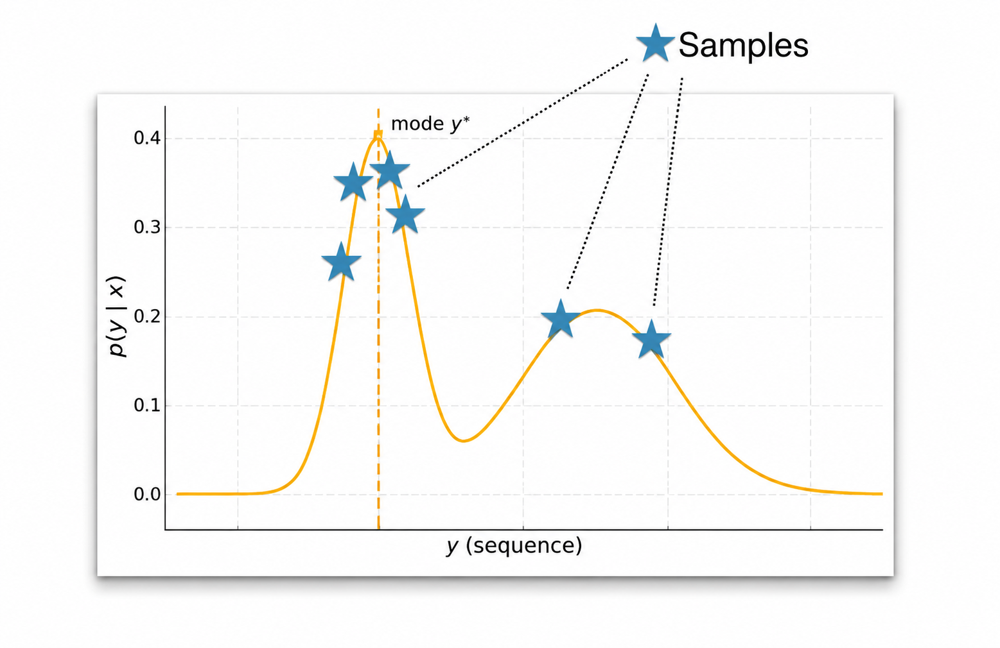
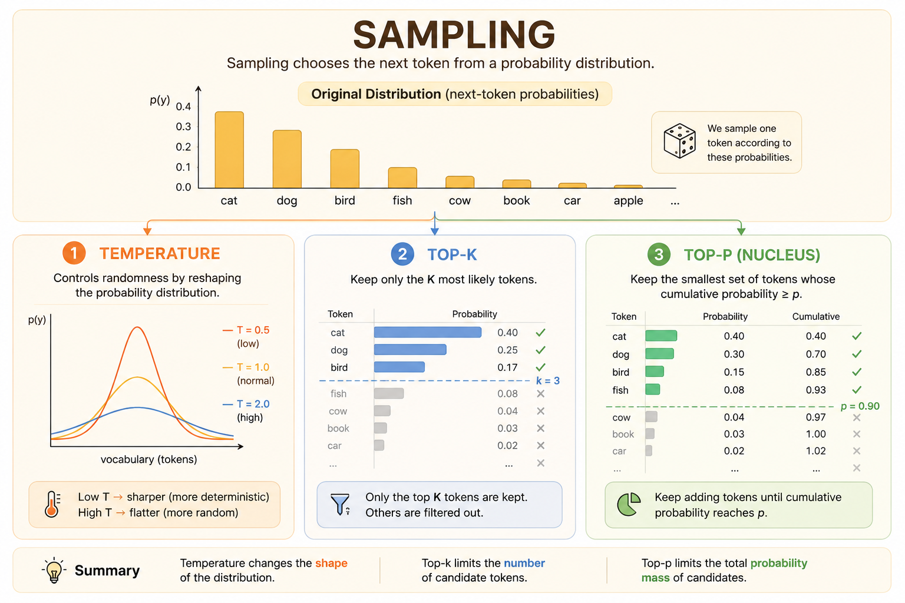

graph TD
Root["Taylor Swift is"] --> A["a"]
Root --> AN["an"]
Root --> THE["the"]
A --> FORMER["former (0.003)"]
A --> WRITER["writer (0.003)"]
A --> LATEST["latest (0.004)"]
AN --> LATEST_AN["latest (0.06)"]
THE --> ONLY["only (0.003)"]
THE --> PERSON["person (0.0004)"]
LATEST --> TO["to (0.0004)"]
LATEST --> IN["in (0.0003)"]
PERSON --> WHO["who (0.00008)"]
PERSON --> TO_PERSON["to (0.00008)"]
TO --> BE["be (0.00002)"]
TO --> JOIN["join (0.00002)"]
CMU Advanced NLP Lecture 9: Decoding Algorithms
Advanced NLP
NLP
Decoding
Beam Search
Sampling
Language Models
Notes on decoding language model outputs with greedy decoding, beam search, sampling, top-k, top-p, temperature, and KV-cache speedups.
Decoding is the process of generating a sequence one token at a time. At each step, the model gives a probability distribution over the next token, and the decoding algorithm decides how to choose from that distribution.
Decoding as Optimization
The optimization view asks for the most likely output sequence:
\[ \hat{y} = \argmax_{y \in \mathbb{Y}} p_\theta(y \mid x) \]
The goal is simple: find the single most likely output. The challenge is that the output space \(\mathbb{Y}\) is enormous.
Greedy Decoding
Greedy decoding chooses the most likely token at each step:
\[ \hat{y}_t = \argmax_{y_t \in \mathcal{V}} P_\theta(y_t \mid \hat{y}_{<t}, x) \]
where:
- \(\hat{y}_t\) is the predicted token at time step \(t\).
- \(\mathcal{V}\) is the vocabulary.
- \(P_\theta\) is the model distribution.
- \(\hat{y}_{<t}\) is the sequence of previously generated tokens.
Greedy decoding is fast and simple, but it does not guarantee the most likely full sequence. A locally best token can lead to a worse sequence later.
Beam Search
Beam search is a width-limited breadth-first search over possible outputs.
The key idea is to maintain several possible paths instead of only one:
- \(B = 1\): equivalent to greedy decoding.
- \(B = |\mathcal{V}|^{T_{\max}}\): exhaustive MAP search.
- In practice, \(B\) is small, often around 4 to 16.
In Hugging Face:
# Greedy decoding
model.generate(do_sample=False, num_beams=1)
# Beam search
model.generate(do_sample=False, num_beams=b)Pitfalls of MAP Decoding
MAP decoding searches for the highest-probability sequence, but highest probability does not always mean best output.
Degeneracy
Models can assign high probability to repeated content, which creates repetitive loops.
Common mitigations:
- Repetition penalties.
- Modified decoding scores.
- Loss modifications during training.
Short Outputs
Short sequences can receive high probability because every extra token multiplies another probability term. In extreme cases, the empty sequence can look attractive.
A common remedy is length normalization.
Atypicality
Human language is diverse. A model that always selects the highest-probability continuation can sound generic, robotic, or less natural than a slightly lower-probability alternative.
| Probability | Output | Assessment |
|---|---|---|
| 0.30 | “The cat sat down.” | High probability and natural. |
| 0.25 | “The cat ran away.” | Slightly lower probability, but still high quality. |
| 0.20 | “The cat sprinted off.” | Lower probability, but still a valid expression. |
| 0.149 | “The cat got out of there.” | Less likely, but still natural in context. |
The probability mass for good language is often spread across many valid outputs, not concentrated on one single sentence.
Sampling
Modern LLM APIs expose decoding controls that turn the next-token distribution into generated text.

Basic Sampling
Basic sampling, also called ancestral sampling, samples directly from the model distribution at each step:
\[ \hat{y}_t \sim p_\theta(y_t \mid y_{<t}, x) \]
This is equivalent to sampling a full sequence from the autoregressive factorization:
\[ \hat{y}_{1:T} \sim p_\theta(y_{1:T} \mid x) \]
Categorical Sampling
Each next-token distribution is a categorical distribution over the vocabulary.
import torch
vocab = ["a", "b", "c", "d", "e"]
probs = torch.tensor([0.1, 0.2, 0.1, 0.4, 0.2])
categorical = torch.distributions.Categorical(probs=probs)
samples = categorical.sample((100,))Basic sampling adds diversity, but it can also create incoherence because low-probability tokens still have some chance of being selected.
Two common problems:
- Heavy tail: a large vocabulary contains many low-probability, low-quality tokens.
- Compounding errors: one bad token can push later predictions into worse contexts.
Top-k Sampling
Top-k sampling keeps only the \(k\) most likely next tokens, sets all other probabilities to zero, then renormalizes:
\[ \hat{y}_t \sim \begin{cases} P_\theta(y_t \mid y_{<t}, x) / Z_t & \text{if } y_t \in \operatorname{TopK} \\ 0 & \text{otherwise} \end{cases} \]
This removes the long tail while still allowing diversity among the strongest candidates.
Top-p Sampling
Top-p sampling, or nucleus sampling, keeps the smallest set of tokens whose cumulative probability reaches a threshold \(p\).
This makes the candidate pool dynamic:
- If the model is confident, only a few tokens may be needed.
- If the model is uncertain, many tokens may be included.
Top-p sampling is more context-aware than a fixed top-k cutoff because it adapts to the shape of the distribution.
In Hugging Face:
# Ancestral sampling
model.generate(do_sample=True)
# Top-k sampling
model.generate(do_sample=True, top_k=k)
# Top-p sampling
model.generate(do_sample=True, top_p=p)Temperature Sampling
Temperature modifies logits before the softmax:
\[ P_i = \frac{\exp(z_i / T)} {\sum_j \exp(z_j / T)} \]

Temperature acts like a diversity dial:
- Low temperature, \(T < 1\): sharpens the distribution and makes generation more conservative.
- High temperature, \(T > 1\): flattens the distribution and makes generation more diverse.
- As \(T \to 0\), temperature sampling approaches greedy decoding.
Too much temperature can make the model incoherent because unlikely tokens receive too much probability mass.
Speeding Up Decoding
Autoregressive decoding generates one token at a time. To generate each new token, the transformer attends to all previous tokens.
Without caching, the model recomputes keys and values for previous tokens at every step, creating unnecessary \(O(T^2)\) work across a length-\(T\) generation.
KV Cache
The KV cache stores the keys and values for previously generated tokens.
At the next decoding step:
- Compute the key and value for the new token.
- Append them to the existing cache.
- Reuse all previous keys and values instead of recomputing them.
The result is faster inference because decoding reuses past computation and shifts repeated work into cached matrix-vector attention over the growing context.